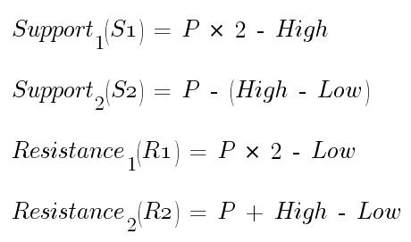
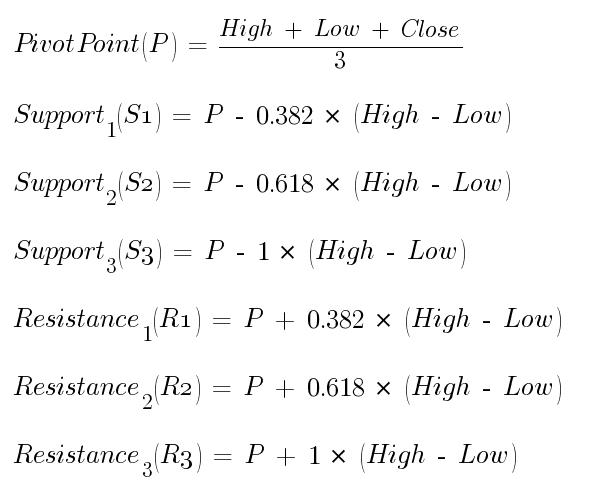
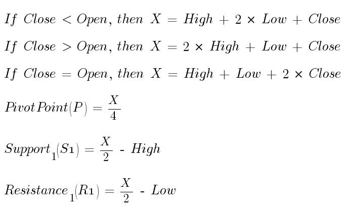
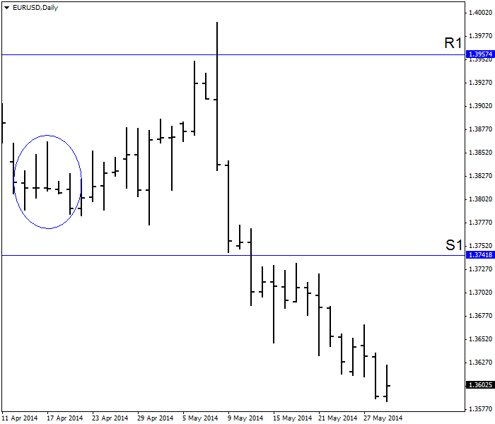
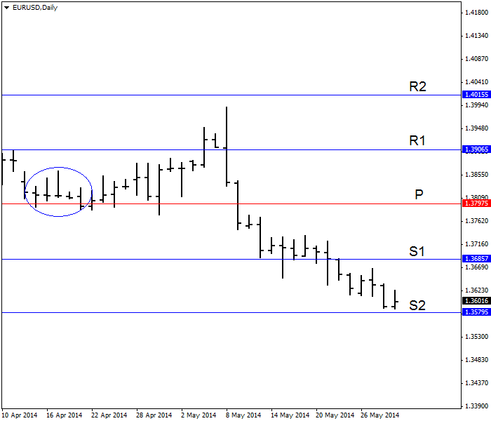
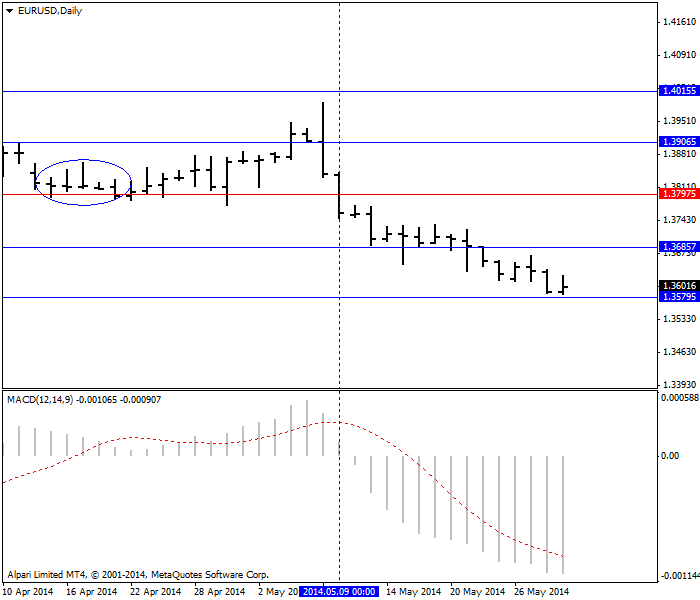

<!DOCTYPE html>
<html>
</html>
<head>
  <meta charset="utf-8">
  <meta http-equiv="X-UA-Compatible" content="IE=edge">
  <title>外汇站（fx-z.com） - 枢轴点</title>
  <meta name="description" content="">
  <meta name="viewport" content="width=device-width, initial-scale=1">
  <meta name="robots" content="all,follow">
  <!-- Bootstrap CSS-->
  <link rel="stylesheet" href="vendor/bootstrap/css/bootstrap.min.css">
  <!-- Font Awesome CSS-->
  <link rel="stylesheet" href="vendor/font-awesome/css/font-awesome.min.css">
  <!-- Google fonts - Roboto-->
  <link rel="stylesheet" href="https://fonts.googleapis.com/css?family=Roboto:400,300,700,400italic">
  <!-- owl carousel-->
  <link rel="stylesheet" href="vendor/owl.carousel/assets/owl.carousel.css">
  <link rel="stylesheet" href="vendor/owl.carousel/assets/owl.theme.default.css">
  <!-- theme stylesheet-->
  <link rel="stylesheet" href="css/style.default.css" id="theme-stylesheet">
  <!-- Custom stylesheet - for your changes-->
  <link rel="stylesheet" href="css/custom.css">
  <!-- Favicon-->
  <link rel="shortcut icon" href="img/favicon.png">
  <!-- Tweaks for older IEs--><!--[if lt IE 9]>
    <script src="https://oss.maxcdn.com/html5shiv/3.7.3/html5shiv.min.js"></script>
    <script src="https://oss.maxcdn.com/respond/1.4.2/respond.min.js"></script><![endif]-->
</head>
<body>
  <div id="all">
    <div class="container-fluid">
      <div class="row row-offcanvas row-offcanvas-left"> 
        <!--   *** SIDEBAR ***-->
        <div id="sidebar" class="col-md-4 col-lg-3 sidebar-offcanvas">
          <div class="sidebar-content">
            <h1 class="sidebar-heading"> <a href="https://fx-z.com">fx-z.com</a></h1>
            <p class="sidebar-p">介绍外汇相关的基本知识，告诉您如何进行自己的技术面和基本面分析，讲解先进的交易理念，并且为您阐述失败交易者与专业交易者之间的真正区别。 </p>
            <p class="sidebar-p">通过这些课程的学习，您将学会如何根据自己的优势来应用情绪分析，还将了解真实世界的事件会对货币汇率产生什么影响，央行在外汇市场中所发挥的作用，以及交易者在颇受欢迎的即期外汇交易中有哪些选择方案。 </p>
            <ul class="sidebar-menu">
                <!-- Link-->
                <li class="sidebar-item"><a href="https://fx-z.com" class="sidebar-link">首页</a></li>
                <!-- Link-->
                <li class="sidebar-item"><a href="cihui.html" class="sidebar-link">外汇词汇</a></li>
                <!-- Link-->
                <li class="sidebar-item"><a href="ebook.html" class="sidebar-link">获取外汇电子书</a></li>
            </ul>
            <p class="social"><a href="https://www.cn-forextime.com/zh?partner_id=4920383" target="_blank"data-animate-hover="pulse" class="external facebook"><i class="fa fa-eur"></i></a><a href="https://www.cn-forextime.com/zh?partner_id=4920383" target="_blank" data-animate-hover="pulse" class="external gplus"><i class="fa fa-gbp"></i></a><a href="https://www.cn-forextime.com/zh?partner_id=4920383" target="_blank" data-animate-hover="pulse" class="external twitter"><i class="fa fa-rmb"></i></a><a href="https://www.cn-forextime.com/zh?partner_id=4920383" target="_blank" title="" class="external instagram"><i class="fa fa-dollar"></i></a><a href="https://www.cn-forextime.com/zh?partner_id=4920383" target="_blank" data-animate-hover="pulse" class="email"><i class="fa fa-money"></i></a></p>
            <div class="copyright text-center text-md-left">
             
              
            </div>
          </div>
        </div>
        <!--   *** SIDEBAR END ***  -->
        <!--   *** DETAIL ***-->
        <div class="col-md-8 col-lg-9 content-column white-background">
          <div class="small-navbar d-flex d-md-none">
            <button type="button" data-toggle="offcanvas" class="btn btn-outline-primary"> <i class="fa fa-align-left mr-2"></i>菜单</button>
            <h1 class="small-navbar-heading"> <a href="https://fx-z.com/9-3.html">下一篇 </a></h1>
          </div>
          <div class="row">
            <div class="col-xl-10">
              <div class="content-column-content">
                <h1>枢轴点</h1>
    <p>
    关于枢轴点的说法总是众说纷纭，这使它成为了一个颇有争议的话题。其核心理念是，使用当前时段的高点价、低点价和收盘价总数据来预测下一时段的支撑位或阻力位。枢轴点是一种被一些分析师称为“领先指标”的较为简略的预测，虽然除了一系列任意预测以外，它们并不“指示”任何事情。而且，枢轴点缺乏用于衡量收盘价对高点价，或收盘价对高低点区间的指标细节。不过，与所有外汇技术一样，如果很多交易者使用枢轴点，而且这些枢轴点全部得出相同或相似的预测，则枢轴点可以成为一种自我实现的预言。
</p>
<p>
    枢轴点的优点之一是，一旦它们基于历史数据被绘制出来之后，它们不再变化。因此，您可以关注价格行为动态与枢轴点预测之间的区别，其中，枢轴点预测被绘制为最后收盘价下面的水平线。股市中常使用前一周的高点价、低点价、收盘价来创建前一周的枢轴点，但在快速发展的外汇市场中，交易者可能将前一日的高点价、低点价、收盘价用于当前时段，或者将前四个小时的高点价、低点价、收盘价用于以小时为基础的交易。您可以想象出数不胜数的组合。
</p>
<p>
    标准枢轴点的算法颇为直接，但这些算法至少有五个版本，且每种都略有调整。它的经典公式先计算主要枢轴点或 P，即高点价 + 低点价 + 收盘价，然后除以 3。
</p>
<p>
     
</p>
<p>
    斐波那契版枢轴点采用斐波那契数字来预测支撑位和阻力位：
</p>
<p>
    
</p>
<p>
    DeMark 枢轴点的发明者是 Tom DeMark；他还发明了许多其他被对冲基金领袖广为推崇的指标。DeMark 版枢轴点的重要之处在于，计算枢轴点时，收盘价是否高于或低于开盘价并不重要。DeMark 加入了一项新因素，被称为 X：
</p>
<p>
     
</p>
<p>
    枢轴点至少还有其他三种版本，但请注意——许多为您计算枢轴点的网站并不展示确切的公式。或许，您可以认为这些网站使用的是经典版本。我们的枢轴点计算器是一个例外，它允许您输入价格数据，采用四种不同的方法（包括 DeMark）获得枢轴点并完成公式。
</p>
<p>
    以下图表显示圆圈内 5 个时段价格的 DeMark 支撑位和阻力位以预测未来走向。价格高点成功穿过 R1 阻力位，但未能穿过收盘价。这一点非常重要——有些分析师称，图表任何部分穿过支撑位或阻力位都足以构成突破，但是以 Sperandeo 为代表的专家认为只有收盘价穿过支撑位或阻力位才能构成“突破”。在本例中，高点是一个后继无力的顶点，之后，价格继续暴跌并下穿支撑位。请注意，价格在突破之前一度摇摆并犹豫了一天。这说明，不止有一个交易者正在寻找确切的 DeMark 水平。
</p>
<p>
     DeMark 阻力位的虚假突破
</p>
<p>
    本例采用的数据为 5 时段数据（EUR/USD），而且经过 20 个时段之后最终才出现真正的突破。这正是枢轴点的最后一项优点——在真正的突破证据出现之前，它们可以预防鲁莽、冲动型交易。
</p>
<p>
    以下图表显示经典枢轴点计算（被成为“floor 枢轴点”）。DeMark 实例中也使用了相同的数据。注意，更低的 R1 已经被突破，但距离后继无力的顶点还有两个时段。当价格下跌之后，它在略高于支撑线的位置徘徊 6 个时段，然后才等到收盘价最终突破该支撑位。同样，这意味着许多交易者在这一位置或其附近设置支撑位。
</p>
<p>
     Floor 枢轴点位于上述同一图表中
</p>
<p>
    这里有一个问题。如果你打算将所有不同枢轴点的计算置于同一张图表中，这一决定将让您的图表瘫痪无用。那么，哪种枢轴点计算是“正确”的呢？可以说，全部正确，而且全部不正确。它没有单一的正确答案——只有适合您风险偏好和自律程度的计算方法。例如，DeMark 版本（S1 1.36857）枢轴点将让您以高于经典“floor”版本（1.37418）的水平卖空。
</p>
<p>
    您作何选择？枢轴点应该与其他适合您交易风格的指标一起使用。例如，如果我们将 MACD 添加到经典枢轴点图表中，那么当价格突破枢轴点本身时，我们将获得卖出信号。请查阅以下图表。您可以将该突破用于初始入场点；等价格突破 S1 时，您可以进一步加仓。
</p>
<p>
     Floor 枢轴点以及相同图表上的 MACD
</p>
<p>
    <br/>
</p>
<p>
    <br/>
</p>
              </div>
            </div>
          </div>
        </div>
      </div>
    </div>
  </div>
  <!-- JavaScript files-->
  <script src="vendor/jquery/jquery.min.js"></script>
  <script src="vendor/popper.js/umd/popper.min.js"> </script>
  <script src="vendor/bootstrap/js/bootstrap.min.js"></script>
  <script src="vendor/jquery.cookie/jquery.cookie.js"> </script>
  <script src="vendor/owl.carousel/owl.carousel.min.js"></script>
  <script src="vendor/masonry-layout/masonry.pkgd.min.js"></script>
  <script src="js/front.js"></script>
</body>